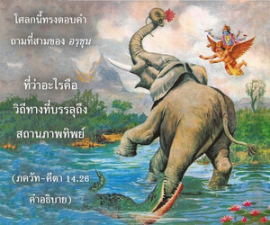

ผู้ปฏิบัติในการอุทิศตนเสียสละรับใช้อย่างเต็มที่ ไม่หยุดยั้งในทุกๆสถานการณ์ ข้ามพ้นระดับต่างๆแห่งธรรมชาติวัตถุ และมาถึงระดับแห่ง พฺรหฺมนฺ ทันที

โศลกนี้ทรงตอบคำถามที่สามของ อรฺชุน ที่ว่าอะไรคือวิถีทางที่บรรลุถึงสถานภาพทิพย์ ดังที่ได้อธิบายไว้แล้วว่าโลกวัตถุทำงานภายใต้มนต์สะกดของระดับต่างๆแห่งธรรมชาติวัตถุ เราไม่ควรหวั่นไหวไปกับกิจกรรมของระดับต่างๆแห่งธรรมชาติ แทนที่จะปล่อยจิตสำนึกไปในกิจกรรมเหล่านี้ เราอาจย้ายจิตสำนึกไปที่กิจกรรมขององค์กฺฤษฺณ ซึ่งเรียกว่า ภกฺติ-โยค หรือปฏิบัติเพื่อองค์กฺฤษฺณเสมอ เช่นนี้มิได้หมายเพียงแต่องค์กฺฤษฺณเท่านั้น แต่รวมถึงภาคแบ่งแยกที่สมบูรณ์ต่างๆของพระองค์ เช่น พระรามและพระนารายณ์ พระองค์ทรงมีอวตารนับไม่ถ้วน ผู้ปฏิบัติในการรับใช้รูปลักษณ์ใดขององค์กฺฤษฺณหรืออวตารที่สมบูรณ์องค์ใดก็ได้พิจารณาว่าสถิตในระดับทิพย์ ควรสังเกตด้วยว่ารูปลักษณ์ขององค์กฺฤษฺณทั้งหมดเป็นทิพย์โดยสมบูรณ์ มีความสุขเกษมสำราญ เปี่ยมไปด้วยความรู้ และเป็นอมตะ องค์ภควานฺเหล่านี้ทรงพระเดชทั้งหมด ทรงเป็นสัพพัญญูและทั้งหมดมีคุณลักษณะทิพย์อย่างสมบูรณ์ ดังนั้นหากเราปฏิบัติในการรับใช้องค์กฺฤษฺณหรือภาคแบ่งแยกที่สมบูรณ์ของพระองค์ด้วยความมั่นใจอย่างแน่วแน่ ถึงแม้ว่าระดับทั้งสามแห่งธรรมชาติวัตถุเอาชนะได้ยากมาก เราจะสามารถข้ามพ้นระดับเหล่านี้ได้โดยง่ายดาย ได้อธิบายไว้แล้วในบทที่เจ็ดว่าผู้ที่ศิโรราบต่อองค์กฺฤษฺณจะข้ามพ้นอิทธิพลของระดับต่างๆแห่งธรรมชาติวัตถุทันที การอยู่ในกฺฤษฺณจิตสำนึกหรือในการอุทิศตนเสียสละรับใช้หมายความว่าเราได้รับความเสมอภาคกับองค์กฺฤษฺณ องค์กฺฤษฺณตรัสว่าธรรมชาติของพระองค์เป็นอมตะ มีความสุขเกษมสำราญ และเปี่ยมไปด้วยความรู้ สิ่งมีชีวิตเป็นละอองอณูขององค์ภควานฺ เศษละอองทองก็เป็นส่วนหนึ่งของเหมืองทอง ดังนั้นสิ่งมีชีวิตในสถานภาพทิพย์ดีเท่าๆกับทองคำดีเท่าๆกับองค์กฺฤษฺณ ในเชิงคุณสมบัติ ความแตกต่างแห่งปัจเจกบุคคลยังคงดำเนินต่อไป มิฉะนั้นจะไม่มีคำว่า ภกฺติ-โยค ภกฺติ-โยค หมายความว่าองค์ภควานฺยังทรงมีอยู่ สาวกก็มีอยู่และกิจกรรมในการแลกเปลี่ยนความรักระหว่างองค์ภควานฺและสาวกก็มีอยู่ ฉะนั้นความเป็นปัจเจกของสองบุคคลมีอยู่ในองค์ภควานฺและปัจเจกชีวิต มิฉะนั้น ภกฺติ-โยค จะไม่มีความหมาย หากเราไม่สถิตในสถานภาพทิพย์เหมือนกับองค์ภควานฺเราจะไม่สามารถรับใช้พระองค์ได้ ในการเป็นผู้รับใช้ส่วนพระองค์ของ กฺษตฺริย เราต้องมีคุณสมบัติเพียงพอ ดังนั้นคุณสมบัติก็คือมาเป็น พฺรหฺมนฺ หรือเป็นอิสระจากมลทินทั้งหลายทางวัตถุ ได้กล่าวไว้ในวรรณกรรมพระเวทว่า พฺรไหฺมว สนฺ พฺรหฺมาปฺยฺ เอติ เราสามารถบรรลุถึง พฺรหฺมนฺ สูงสุดด้วยการมาเป็น พฺรหฺมนฺ เช่นนี้หมายความว่าเราต้องมาเป็นหนึ่งเดียวกับ พฺรหฺมนฺ ในเชิงคุณสมบัติ จากการบรรลุถึง พฺรหฺมนฺ เรามิได้สูญเสียบุคลิก พฺรหฺมนฺ อมตะของตนเองในฐานะที่เป็นปัจเจกวิญญาณ